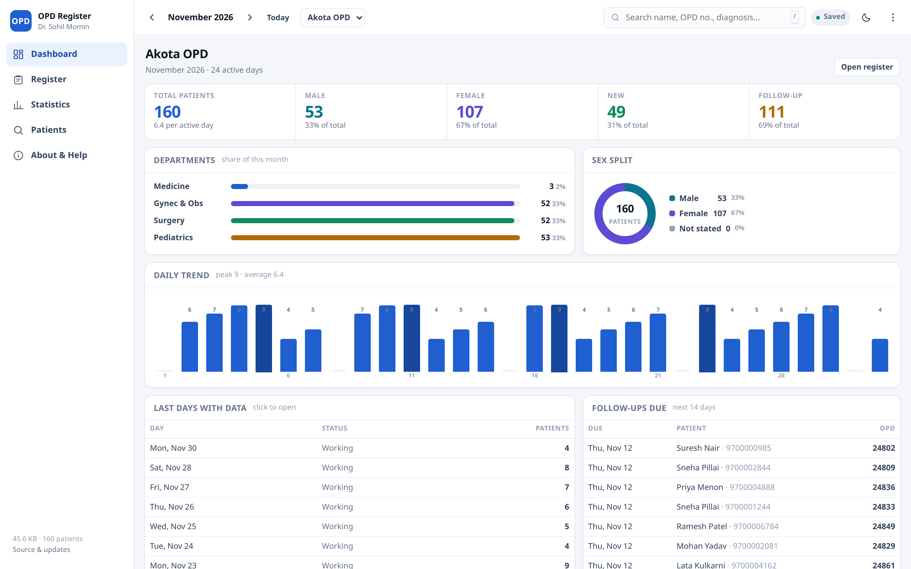
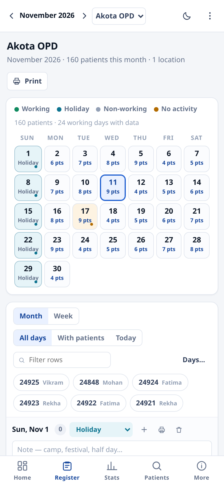

The OPD register, on one page, at typing speed.
Every day of the month, ready to type into. Counts and department splits update as you write. Print the register, or export a day-wise sheet to Excel — from one HTML file that never touches the internet.


Built for the ten minutes after clinic
Not a hospital information system. The daily book a doctor actually keeps — with the arithmetic done properly.
Month register, pre-scaffolded
Every day of the month is laid out with blank rows. Type in the last row and the next one appears. Empty days stay collapsed until you need them.
Counts that follow the rules
Gynecology is female-only. Anyone under 15 also counts under Pediatrics. New versus follow-up is read from the case field, not guessed.
Returning patients fill themselves
Type an OPD number you have used before and name, age, sex, address, diagnosis and treatment arrive with it — still editable.
Keyboard first
Enter moves down a column, Ctrl+Enter adds a row, / searches, N is a new patient, Alt+← moves month. No mouse needed to fill a day.
Print, Excel, CSV
A print sheet laid out for A4, an .xls with real formatting, and a plain CSV of the whole month — for the accountant or the district report.
Several OPD centres
Akota, Alkapuri, a camp — each location keeps its own register, dashboard and statistics. Switch in one click.
Find any patient, any month
One search box across every month you have recorded, and across every location if you tick the box.
Wrong day? Drag it.
Grab a patient by the row number and drop it on another day. The move is undoable, and every field comes with it.
The week, side by side
Seven columns, one per day, with the patients in each and a weekly total above. What a Monday-morning review actually looks at — and it prints on one page.
The patient's last visit, in front of you
Open anyone and the editor leads with their previous visits — diagnosis, prescription, how long ago — with one tap to copy what you gave last time, or to print the whole history on half a page.
Follow-ups that come back to you
A follow-up date on the row, a mobile number beside it, and a dashboard panel listing everyone due in the next fortnight — the register becomes a worklist.
A year on one screen
Twelve months, a bar each, the annual totals and the busiest month — the sheet an annual report is copied from, and it prints with a signature line.
One page a month for the file
Digest prints a single sheet: totals, department share, every day, and a signature line. What a monthly meeting actually asks for.
Lockable, if you want it
Offered once on first open, with Not now beside Turn it on — say no and nothing changes, ever again unless you ask. Turn it on and the register becomes AES-GCM ciphertext on disk, keyed by PBKDF2 and held in memory only while unlocked. It re-locks itself when left idle, and an encrypted backup can leave the device without the key leaving with it.
Backup you can hold
Export everything as JSON, import it on another machine. Importing shows what the file holds and what merging would add before it touches anything — and both paths are undoable. Data lives in IndexedDB in this browser only; nothing is uploaded, ever.
What it does with a number
The rules are written down in the app, not buried in code, because a report nobody can explain is worse than no report.
- A row is a patient when any clinical field is filled — OPD no., department, name, age, address, diagnosis or treatment.
- Gynecology is female-only. Any department containing gyn, obs or obstet is counted as female, whatever the sex field says.
- Under 15 counts as Pediatrics. A child entered under Medicine appears in both — age accepts
5,5y,6 mo,3 days. - Day status is a label, never a filter. Holiday and no-activity days are excluded from the per-day average but their patients still count.
Where the data lives
In this browser's local storage, on this device, in a single key. Nothing else.
- No account, no analytics, no cookie, no network call — the page loads its own files and stops.
- Clearing site data erases the register, so export a backup weekly. The import restores every location and month.
- Install it as a PWA, or run the single-file build from a USB stick, or use the EXE and APK builds from the releases page.
- Deleting a patient or a day is undoable for a few seconds — the toast at the bottom offers it.
Four ways to run it
Same code, same commit. The pipeline builds all of them on every push.
| Build | What it is | Get it |
|---|---|---|
| Web / PWA | Open the page and install it from the browser menu. Cached by a service worker, so it opens with no network. | Open the app |
| Single HTML file | One file, ~130 KB, works from a USB stick or an email attachment. No server. | Releases · dist/opd-register.html |
| Windows EXE | Portable, no installer, no admin rights. Built by CI on Windows. | Releases |
| Android APK | Sideload on the phone in the consulting room. Works with no signal. | Releases |
Releases are rolling: app-latest always points at the newest successful build of main.
Author, licence, and how to help
Licence. PolyForm Noncommercial 1.0.0 — free to use, study, change and share for any noncommercial purpose, including in a clinic that does not charge for the software. Read the full text.
Security. The register is stored in IndexedDB on the device. The optional lock encrypts it with AES-GCM-256 (PBKDF2-HMAC-SHA256, 310,000 iterations, random 16-byte salt); the passphrase is never stored or transmitted, and cannot be recovered.
Credits. No frameworks, no icon fonts, no analytics. System fonts only. The licence text is by the PolyForm Project. Patient names in every screenshot are generated by the app's own demo data.